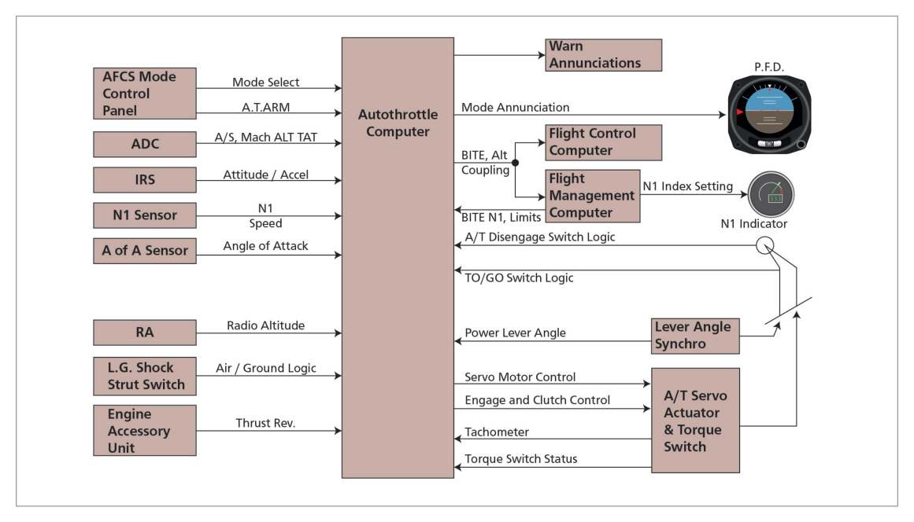

What this section covers: Definition, thrust control parameters, and the scope of A/T operation.
An autothrottle system is a computer-controlled, electromechanical system that controls the thrust of an aircraft's engines within specific design parameters. It controls throttle position to maintain a specific value of thrust in terms of:
Fan Speed (N1)
Engine Pressure Ratio (EPR), or
Target Airspeed (set by SPD on mode control panel)
Important Distinction: Although there are thrust computation systems, there is currently no direct indicator of thrust value in use. Instead, N1 and EPR are used as measures of engine thrust. The throttles control thrust; on some aircraft the preferred name is thrust levers.
Using the above modes, the autothrottle can control either engine thrust or aircraft speed from the beginning of the take-off roll until disconnection after an automatic landing.
2. Autothrottle System Components
What this section covers: Inputs, outputs and feedback of the Thrust Management System.
The autothrottle (also called Thrust Management System / TMS) works in conjunction with the autopilot and FMS.

Fig 28.1 — Basic autothrottle system and signal interfacing (source p.393)
System Inputs
Input
Source
Mode selection & A/T Arm switch
MCP
TAS, Mach No., TAT
ADC
Attitude and acceleration
IRS
N1 speed and/or EPR
Engine sensors
Angle of attack
AoA sensor
Radio altitude
Radio altimeter
Air/ground logic
Landing gear switch
Reverse thrust requirement
Engine accessory unit
Thrust command
FMS or thrust mode select panel
A/T Disconnect switch signal
Throttle levers
PLA (power lever angle)
Transducers
Flap position
Flap position sensor
System Outputs
A/T servo actuator signals to move throttles
A/T disengage circuit
BITE circuits (Built-In Test Equipment) in FCC and FMC
The A/T compares actual values with reference values and passes control signals to servomotors of the thrust levers. Feedback from servo actuators to the Thrust Management Computer (TMC) controls the rate of movement of the thrust levers.
3. Boeing 737-400 A/T System
What this section covers: The A/T system as fitted to the 737-400, the JAR reference aircraft.
The A/T provides automatic thrust control from start of take-off roll through to disconnect after landing. In normal operation, the FMC provides the A/T system with N1 limit values.
The A/T moves each thrust lever with a separate servomotor. Manually positioning thrust levers does NOT cause A/T disengagement unless 10 degrees of thrust lever separation is exceeded during a dual channel approach after FLARE is armed. Following manual positioning, the A/T may reposition thrust levers to comply with computed requirements (except in HOLD and ARM modes).
4. Power Management Control (PMC)
What this section covers: The PMC — the electronic engine management unit on the 737-400.
The thrust control system consists of a hydromechanical Main Engine Control (MEC) unit and a PMC unit on each engine:
MEC: Schedules fuel to provide thrust called for by thrust lever setting
PMC: Further refines fuel flow electronically, without moving thrust levers, using MEC power lever angle, N1 speed, inlet temperature and pressure
PMC Constant Thrust Climb Feature: Once thrust is set for climb, the PMC automatically maintains that thrust setting throughout the climb profile with no further thrust lever adjustments. This is a "set and forget" feature.
PMC Failure
PMC detects failure → schedules slow N1 drift over approximately 30 seconds → illuminates PMC INOP light + ENG annunciator + MASTER CAUTION lights
PMC selected OFF on aft overhead panel → engine speed controlled by hydromechanical MEC only
A/T with PMC ON or OFF: A/T system operates properly with PMCs ON or OFF. Recommended to have both PMCs in same state (both ON or both OFF) to minimize thrust lever separation. A/T take-offs may be performed with both PMCs OFF.
5. A/T Engagement and Disengagement
What this section covers: How the A/T is armed, engaged, and the conditions that cause disengagement.
Moving the A/T Arm switch to ARM arms the A/T for engagement in the N1, MCP SPD, or FMC SPD mode. The switch is magnetically held at ARM and releases to OFF when A/T becomes disengaged.
A/T Disengagement Conditions
Moving A/T Arm switch to OFF
Pressing either A/T Disengage switch
A/T system fault detected
2 seconds have elapsed since landing touchdown
Thrust levers separated by more than 10 degrees during dual channel approach after FLARE is annunciated
Extinguishing A/T Disengage Warning Light:
Returning A/T Arm switch to ARM
Pressing either A/T Disengage light
Pressing either A/T Disengage switch
The A/T Disengage lights do NOT illuminate when A/T automatically disengages after landing.
6. A/T Operating Modes
What this section covers: All A/T modes from take-off through go-around.
flowchart LR
TO["Take-off\nTO/GA → N1\nAdvances to T/O thrust"] --> THR_HLD["THR HLD at 84 kt\n(A/T cannot change thrust\nbut manual OK)"]
THR_HLD --> ARM_LIFT["ARM after 400 ft RA\n+ 18 sec post-liftoff\nReduction to climb thrust\nby pressing N1 switch"]
ARM_LIFT --> N1["N1 Mode\nMaintains FMC N1 limit"]
ARM_LIFT --> SPD["Speed Mode (MCP SPD)\nMaintains target IAS/Mach"]
N1 --> RETARD["RETARD\n(LVL CHG / VNAV descent)"]
SPD --> FLARE_RETARD["RETARD\n2.5 sec after FLARE\nOR at 27 ft RA"]
FLARE_RETARD --> DISENG["Auto-disengage\n~2 sec after TD"]
Take-off Mode
Engaged by pressing TOGA switch on the ground with A/T armed and desired T/O N1 selected from FMC CDU. A/T annunciation changes from ARM to N1; thrust levers advance toward T/O thrust.
THR HLD annunciates at 84 kt (earlier computers: 64 kt) — A/T cannot change thrust level position, but thrust levers can be manually repositioned
After lift-off, THR HLD until 400 ft RA reached AND approximately 18 seconds have elapsed since liftoff
A/T annunciation then changes to ARM; reduction to climb thrust by pressing N1 switch
Automatic reduction to climb thrust inhibited until 2½ minutes after lift-off when in LVL CHG or V/S mode
N1 Mode
A/T maintains thrust at the N1 limit selected from FMC CDU. If an engine fails while in N1 mode, the thrust lever of the failed engine will advance a few degrees and then return to or below the other lever position.
Speed Mode (MCP SPD)
Available throughout the flight once take-off phase is complete. A/T maintains the speed shown in the MCP IAS/MACH display. A/T will not set power above the displayed N1 limit. If an engine fails in speed mode, both thrust levers advance together to maintain target speed.
Recommended approach speed setting: VREF + 5 kt.
Do NOT set higher command speed to allow for wind/gust corrections — A/T corrects for normal wind gusts through airspeed and acceleration sensing. Higher command speeds cause excessive approach speeds.
Below 400 ft RA: A/T thrust response rate and engine power levels are sufficient to place engines in the rapid acceleration range.
FMC Speed Mode
A/T mode commanded by FMC during V NAV operation. MCP IAS/Mach display is blank; airspeed cursors positioned at FMC commanded airspeed. A/T limited to N1 value shown on thrust mode annunciators.
N1 Equalization
The A/T attempts to equalize N1 through dual servo individual thrust lever control. Equalization control is limited to 8 degrees of thrust lever separation.
ARM Mode
Annunciated ARM when A/T Arm switch is at ARM and no A/T mode is engaged. Thrust levers can be manually positioned without A/T interference.
Descent Retard Mode
A/T engages and annunciates RETARD during LVL CHG and V NAV descents. RETARD changes to ARM when thrust levers reach aft stop or are manually prevented from reaching it.
Landing Flare Retard Mode
RETARD mode engages and reduces thrust 2½ seconds after FLARE mode engagement OR at 27 ft RA, whichever occurs first. Also engages at 27 ft RA during non-precision/visual approach with flaps ≥15° and AFDS not in ALT ACQ or ALT HOLD. A/T auto-disengages approximately 2 seconds after landing touchdown.
Go-around Mode
A/T GA mode is armed when descending below 2000 ft RA (with or without AFDS). Once armed, can be engaged until 2 seconds after landing touchdown.
Pressing either TOGA switch → GA annunciated; thrust levers advance to reduced GA thrust setting (produces 1000–2000 fpm rate of climb)
Pressing TOGA a second time after reaching reduced GA thrust → A/T advances to full GA N1 limit
During single-engine FD go-around → A/T increases thrust to full N1 limit
7. A/T Warning Lights & Thrust Mode Annunciator
What this section covers: A/T Disengage light behaviour and the Thrust Mode Annunciator panel.
Light State
Meaning
Flashing Red
A/T disengaged for any reason
Steady Red
Disengage Light Test Switch position 2 (red filament test)
Steady Amber
Disengage Light Test Switch position 1 (amber filament test)
Flashing Amber
A/T airspeed error: speed not held within +10 / –5 knots of commanded speed (when in MCP SPD or FMC SPD, in flight, flaps not up)
Automatic Amber Flash Test: The A/T amber light auto-tests if A/T is engaged in MCP SPD or FMC SPD mode, more than 150 seconds after lift-off, and flaps extended. Flash pattern: 2 sec flash → 2 sec off → 2 sec flash.
Thrust Mode Annunciator (TMA) Panel
Located on the centre instrument panel above N1 rpm indicators (737-400). Displays the active N1 limit reference mode for both autothrottle and manual thrust control.
A/T LIM Annunciation: When FMC N1 limit calculations become invalid, OR if either engine N1 is less than 18%, A/T LIM is annunciated. The autothrottle computer then calculates a single N1 limit for the affected engine(s).
8. Flexible Take-off
What this section covers: Reduced-power (flexible) take-off and how it is achieved with the autothrottle.
When take-off can be performed without full engine power (e.g., light weight, long runway), reduced power may be used to reduce engine wear and increase engine life. This is the Flexible Take-off mode (FLEX TO on Airbus).
Achieving Reduced Thrust with A/T
Select a temperature on the control panel that is higher than the ambient airfield temperature. The thrust computation system calculates a lower limiting EPR or N1, producing reduced power for take-off.
Exam Tip: The higher "assumed temperature" fools the FADEC/thrust computation system into thinking the day is hotter, which corresponds to less available engine thrust — thus the system limits to a lower N1/EPR, producing the desired reduced thrust.
9. Turbulence
What this section covers: A/T operation in turbulent conditions.
Light to Moderate Turbulence: A/T can stay engaged unless performance is poor. Increased thrust lever activity expected; airspeed excursions of 10–15 knots are normal.
Severe Turbulence: The autothrottle is NOT to be used in severe turbulence.
10. FADEC — Full Authority Digital Engine Control
What this section covers: FADEC definition, functions, advantages, and thrust control (Airbus reference).
FADEC = Full Authority Digital Engine Control. Provides complete engine management throughout all phases of flight.
FADEC Functions
Gas generation control (fuel flow, acceleration/deceleration, variable bleed valves/stator vanes, turbine clearance, idle setting)
Electronic Engine Control (EEC) + fuel metering unit + sensors + peripheral units. Two FADEC channels per engine (one controlling, one standby — redundancy).
Powered by aircraft AC supply before and during initial start
Above 12% engine rpm: powered by individual internal magnetic alternator
FADEC Thrust Lever Detents (Airbus)
Thrust levers only moved manually (unlike many autothrottle systems). Lever sector divided into 4 segments by 5 detents/stops. Thrust lever position transmitted to FADEC which computes and displays thrust rating limit and N1 TLA. No reverse idle detent — reverse idle selected by pulling up reverse thrust levers to clear the idle stop.
FADEC Thrust Rating Limit Rule:
Thrust lever in a detent → FADEC selects rating limit corresponding to that detent
Thrust lever between 2 detents → FADEC selects rating limit corresponding to the higher mode
FADEC Fuel Control
HMU (Hydromechanical Unit) — modulated by FADEC; provides fuel flow control to combustion chamber, hydraulic signals to actuators, and over-speed protection.
FMV (Fuel Metering Valve) — transforms FADEC orders into fuel flow via torque motor/servo valve. FMV resolver provides electrical feedback proportional to FMV position.
FADEC computes fuel flow to hold target N1. Allows N2 to vary (within limits) to maintain lift, bleed air, and avoid engine stall/flameout. FADEC also modulates cooling airflow around engine casing to control compressor/turbine clearances.
FADEC Thrust Control — Automatic Mode
In auto-thrust mode (A/THR function active), thrust is computed by the FMGC and limited to value corresponding to thrust lever position (except during alpha floor activation).
Quick Revision Summary — Chapter 28:
A/T controls N1, EPR, or target airspeed; no direct thrust indicator exists
A/T operates from start of take-off roll to ~2 seconds after touchdown
THR HLD engages at 84 kt; clears at 400 ft RA + 18 sec after liftoff
A/T auto-disengages: OFF switch, disengage switch, system fault, 2 sec after TD, 10° lever separation in dual approach after FLARE armed
Recommended approach speed: VREF + 5 kt — do not add extra for gusts (A/T does this automatically)
GA mode: armed below 2000 ft RA; first TOGA = reduced GA thrust; second TOGA = full GA N1
Turbulence: A/T OK in light-moderate (expect ±10–15 kt excursions); NOT used in severe turbulence
FADEC: 2 channels per engine; powered by A/C supply then by magnetic alternator above 12% rpm
FADEC between detents: selects higher mode rating limit
Practice Questions & Detailed Answers
Instructor-generated questions in DGCA CPL/ATPL examination style.
Q1.The autothrottle THR HLD annunciation during take-off occurs at:
60 knots IAS
84 knots IAS
400 ft RA
V2 + 20 knots
Correct Answer: (b) 84 knots IAS
Explanation: THR HLD annunciates at 84 kt (64 kt for aeroplanes with earlier A/T computers) to indicate that the A/T cannot change thrust level position — but the thrust levers can be manually repositioned. THR HLD remains until 400 ft RA and approximately 18 seconds after liftoff. See Section 6.
Why other options are wrong:
(a) 60 kt is the FD pitch change threshold (Chapter 25), not the A/T THR HLD trigger.
(c) 400 ft RA is when THR HLD is cleared, not when it engages.
(d) V2 + 20 kt is the FD target speed reference, not an A/T threshold.
Instructor's Note: THR HLD = autopilot-generated thrust hold. The A/T sets the thrust for T/O, then HOLDS it until the aircraft is safely airborne and established on climb.
Q2.During a dual channel approach with FLARE armed, the A/T will automatically disengage if thrust lever separation exceeds:
5 degrees
8 degrees
10 degrees
15 degrees
Correct Answer: (c) 10 degrees
Explanation: Thrust levers separated by more than 10 degrees during a dual channel approach after FLARE is annunciated will cause A/T disengagement. See Section 5.
Why other options are wrong:
(a) 5 degrees is too small; minor lever separation is tolerated.
(b) 8 degrees is the N1 equalization limit, not the A/T disengage threshold.
(d) 15 degrees exceeds the actual threshold — A/T would already have disengaged.
Instructor's Note: Distinguish the two separation values: 8° = N1 equalization limit; 10° = A/T disengagement threshold during dual approach with FLARE armed.
Q3.What is the recommended A/T approach speed setting for the Boeing 737-400?
VREF
VREF + 5 kt
VREF + 15 kt to allow for gusts
VREF + 20 kt
Correct Answer: (b) VREF + 5 kt
Explanation: The recommended A/T approach speed setting is VREF + 5 kt. Adding extra speed for wind/gust corrections is NOT recommended — the A/T corrects for normal wind gusts through airspeed and acceleration sensing. Higher command speeds result in excessive approach speeds. See Section 6.
Why other options are wrong:
(a) VREF alone, without the +5 kt buffer, is not recommended.
Instructor's Note: VREF + 5 is the standard 737-400 A/T approach command speed. The A/T's acceleration sensing handles gusts — trusting it is part of the system philosophy.
Q4.During a go-around, pressing the TOGA switch a second time (after initial GA thrust has been set) will cause the A/T to:
Disengage
Advance thrust levers to idle
Advance thrust levers to full GA N1 limit
Remain at reduced GA thrust
Correct Answer: (c) Advance thrust levers to full GA N1 limit
Explanation: The first TOGA switch press advances thrust to reduced GA thrust (producing 1000–2000 fpm rate of climb). Pressing TOGA a second time, after reaching reduced GA thrust, signals the A/T to advance thrust to the full GA N1 limit. See Section 6.
Why other options are wrong:
(a) Second TOGA press does not disengage the A/T.
(b) Advancing to idle is the opposite of a GA requirement.
(d) Remaining at reduced GA thrust is what happens before the second TOGA press.
Instructor's Note: The two-step TOGA philosophy: first press = safe assured climb; second press = maximum go-around power. This gives crew a chance to assess before committing to full power.
Q5.FADEC stands for:
Full Automated Digital Engine Computer
Full Authority Digital Engine Control
Fuel and Air Digital Engine Controller
Flight Automated Digital Engine Computer
Correct Answer: (b) Full Authority Digital Engine Control
Explanation: FADEC = Full Authority Digital Engine Control. It provides complete engine management throughout all phases of flight, including gas generation control, engine limit protection, power management, and engine starting. See Section 10.
Why other options are wrong:
(a), (c), (d) These are fabricated expansions of the acronym. "Full Authority" is critical — it means the system has complete (full) authority over engine control, unlike partial authority systems.
Instructor's Note: "Full Authority" is the key distinguishing word — FADEC has complete control authority, unlike earlier partial authority engine management systems.
Q6.A flexible (reduced thrust) take-off is achieved with the autothrottle by:
Manually setting thrust levers to a lower position before take-off
Selecting a higher assumed temperature than the actual ambient temperature on the control panel
Selecting a lower N1 limit directly on the EICAS display
Reducing the fuel flow on the FMC CDU before take-off
Correct Answer: (b)
Explanation: Selecting a temperature on the control panel that is higher than the ambient airfield temperature causes the thrust computation system to calculate a lower limiting EPR or N1. This produces reduced power for take-off — the "assumed temperature" method. See Section 8.
Why other options are wrong:
(a) Manual lever positioning is the most basic reduced-thrust method, but not how the A/T achieves flexible take-off.
(c) N1 limits on EICAS are computed outputs, not direct control inputs for flexible T/O.
(d) Reducing fuel flow on the FMC CDU is not a standard flexible T/O procedure.
Instructor's Note: The assumed temperature method is the standard industry technique. Higher assumed temperature = hotter day = less dense air = engine produces less thrust → lower N1/EPR limit computed.